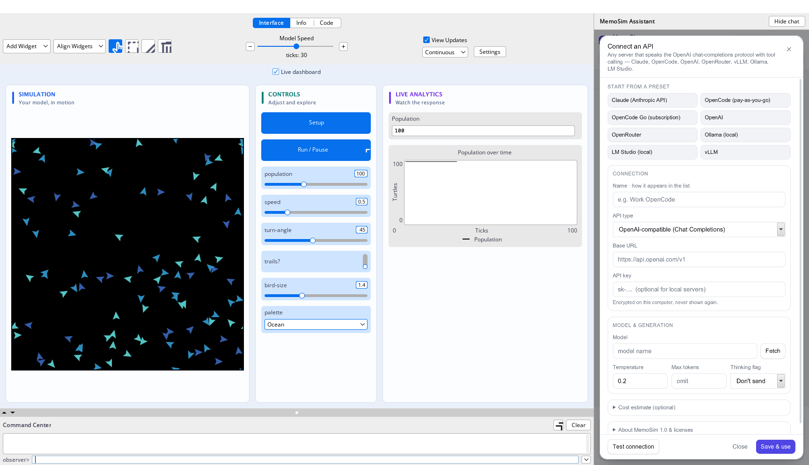

A hands-on, offline course
Build and investigate a random walk
By texting in this style, all the stuff become available: “I want a random walk that runs up to N steps, seeds the walk, plots the position, and lets me sweep the seed.” Tell MemoSim in plain language what you want; it drafts the model, wires the controls, and tests it for you.
In this guided first model, a walker starts at zero and takes one step left or right each tick. You will create a model, connect controls and a plot, test repeatability, compare runs, and save your work. You do not need a network connection, an AI assistant, or programming experience.
Time: about 45–60 minutes. What you need: MemoSim Desktop. Work through the lessons in order; the complete source is available below if you want to paste rather than type.
Before starting
This tutorial uses the native NetLogo workspace inside MemoSim. The Interface tab is the model's dashboard: it shows the world and any controls, monitors, and plots you add. The Code tab is where you define procedures. A button in the dashboard calls a procedure by name; a slider supplies a global input variable to that same code.
Chat-first tip: You don't have to open Code and type from scratch. Open the chat panel and text “Create a random-walk model: one walker moves left or right each tick, stops at step-limit, seeds random with seed-value, with a monitor for walk-distance and a plot of Position over time.” MemoSim will draft the code and widgets for you; you then review, compile, and test.
A tick is one unit of simulated time, not one second. A random walk is a sequence of randomly selected steps. Here, the walk's position is an integer: it changes by exactly −1 or +1 per tick. Randomness means a run can differ from the last one; a chosen seed makes that sequence repeatable.
Your progress: check lessons as you complete them. Progress is stored only in this browser when local storage is available.
1. Create a model and find your way around
By texting in this style, all the stuff become available: “Create a random walk model with one walker that moves −1 or +1 each tick, stops at a step limit, and seeds the random generator.”
- Start MemoSim Desktop. You can do every programming and simulation step here with no internet access.
- Choose File → New to create an empty model. Select the Code tab. You should see the editor where procedures are written.
- Switch to Interface. The initially empty dashboard contains the world view and widget editing controls. In Live dashboard mode, simulation, controls, and analytics share the dashboard. The chat dock is a separate, optional part of the desktop window.
- Chat-first creation: Open the assistant panel and text: “Create a random walk model: a walker that moves −1 or +1 each tick, stops at step-limit, with sliders for step-limit and seed-value, a Setup button, a Go button that runs forever, a monitor for walk-distance, and a plot of Position over time.” Review the proposed code and widgets, then apply if it compiles.
Before adding widgets, orient yourself. In Code, text is a program. In Interface, a slider or button is an editable object and an interactive control. When you add an Interface button, you tell it which procedure to run; it does not copy that procedure into the Code editor.

Checkpoint: switch between Code and Interface without closing the model. Return to Code before continuing.
2. Write the model's two procedures
By texting in this style, all the stuff become available: “Write setup that clears the walker, sets walk-distance to zero, and seeds from seed-value; write go that stops at step-limit, moves −1 or +1, then ticks.” MemoSim writes the code and compiles it for you.
Enter the following in the Code tab, or ask MemoSim to paste it directly. The opening and closing words to and end mark each procedure. Indentation is for people reading the code; the brackets group commands that should happen together.
globals [ walk-distance ]
to setup
clear-all
set walk-distance 0
random-seed seed-value
reset-ticks
end
to go
if ticks >= step-limit [ stop ]
ifelse random 2 = 0
[ set walk-distance walk-distance - 1 ]
[ set walk-distance walk-distance + 1 ]
tick
endDownload the same source as a plain-text file. If you use the copy button, paste into the Code editor. If you type it, preserve the procedure names, square brackets, and parentheses exactly.
Chat-first alternative: Instead of typing this by hand, text “Generate this model’s code directly into the Code tab” after asking MemoSim to create it, then review the proposed code before applying.
Read it from top to bottom:
globals [ walk-distance ]creates a model variable to hold the current position.setupclears the previous run, sets the position to zero, initializes the random generator from the slider, and resets the clock.gostops once the tick limit is reached. Otherwiserandom 2produces either 0 or 1; the matching branch changes position by −1 or +1, thentickadvances time by one.
The slider names are intentional dependencies on widgets you will add next. NetLogo creates a global for each slider. Declaring either of them again in globals would create a duplicate-variable error.
The code refers to step-limit and seed-value, which will be supplied by the two sliders in the next lesson. Before those widgets exist, NetLogo may report the expected “nothing named” error. Add both sliders before treating that message as a code defect. Once the sliders exist, switch between Code and Interface to check the complete model. A missing bracket or misspelled slider name is still enough to prevent compilation.
3. Add sliders and buttons
By texting in this style, all the stuff become available: “Add sliders step-limit (1–100, default 40) and seed-value (0–100000, default 2025), a Setup button running setup, a forever Go button running go, a monitor for walk-distance, and a plot called Position over time.” MemoSim wires all four widgets and the plot pen for you.
Switch to Interface and choose the widget-edit control. Right-click the canvas and choose a widget type from its menu to add each slider, button, monitor, or plot. If an edit dialog opens, enter the settings below and confirm them. Return to the interact control when the widgets are ready.
Slider: run length
- Global variable:
step-limit - Minimum: 1; maximum: 100; increment: 1; value: 40
- Units: steps
Slider: random seed
- Global variable:
seed-value - Minimum: 0; maximum: 100000; increment: 1; value: 2025
- Units: seed
The variable names must use the same spelling and hyphens as the code. The slider value is available directly as a global; do not add slider variables to the declaration at the top of the Code tab.
Chat-first alternative: Open chat and text “Add the two sliders step-limit and seed-value to this model.” MemoSim upserts the widgets; review the proposed settings and apply.
When adding a widget, the selected edit tool may attach its shadow to the pointer. Place it on the canvas and click to finish. You can move and resize it later in edit mode. Arrange the two buttons and sliders together as controls, and place the monitor and plot near one another as measurements. In the dashboard view, the native layout groups these real widgets by function; if the original canvas is easier for editing, switch off Live dashboard, edit there, then turn it back on.
Button: initialize
- Commands:
setup - Leave Forever off.
- Give it a display name such as Setup.
Button: advance
- Commands:
go - Turn Forever on, so the button repeats
gountil it is pressed again or the run reaches its limit. - Give it a display name such as Go.
Return to Interface's interact mode when editing is complete. Click Setup: walk-distance should become 0 and ticks should be 0. Click Go: ticks should increase until it reaches the slider's value (40 by default). Pressing Go again after the limit should not extend the run. Change step-limit, click Setup, then Go to start a new run with the new limit.
For a single-step test, edit the Go button and turn Forever off temporarily. Each click should advance one tick. Restore Forever afterward, or simply keep it off for manual stepping.
Checkpoint: with the limit at 40, a completed run has exactly 40 ticks. At the default seed, Setup resets the random sequence each time, so clicking Setup and running again produces the same result.
4. Add a monitor and a plot
By texting in this style, all the stuff become available: “Add a monitor for walk-distance labeled Position, and a plot called Position over time with x-axis Ticks and y-axis Position, plotting walk-distance each tick.”
A monitor displays a reporter's current value. A plot retains a series of values over simulated time. Add a monitor and configure it with the reporter walk-distance. Its display should read 0 immediately after Setup and the walk's final position after Go completes.
Add one plot and give it a meaningful title, such as Position over time. Set its horizontal axis label to Ticks and vertical axis label to Position. Open the plot's edit panel, select its default pen in the pen list, and put the following in that pen's Update commands field:
if ticks > 0 [ plotxy ticks walk-distance ]The command plots the current position against the current tick. The condition skips plotting at tick zero. The model's Setup clears the plot as part of clear-all; running Go draws one point per tick. Leave automatic axis scaling enabled if the editor offers that setting. The position is not guaranteed to stay near zero, so a fixed narrow vertical range can hide valid values.
Arrange the widgets so you can see the simulation area and all controls and analytics. Hide chat to give the dashboard more room, as shown here:

Use the native chat dock's collapse control if it is open; expanding it restores access to the assistant. This changes available screen space, not the simulation or the model. The dashboard also keeps controls and analytics visible alongside the world; switching to the original canvas layout is optional.
If your plot is hard to read, edit its title and axis labels before changing the code. A label that says “position” is more informative than the default pen name. If the path seems to jump by more than one between visible marks, remember that a plot may redraw after several commands at once; the code still updates the position by exactly one per tick. Compare the final tick and monitor value to validate the run rather than assuming every screen refresh is a single step.
Run Setup and Go. Expected result: the monitor changes as steps occur, the plot gains points, and the horizontal axis reaches the run limit. Since each step changes position by one, the final result is an integer between −40 and +40 for a 40-step run, inclusive. It is not necessarily zero. The plotted path begins at the first step's position and ends at the final one.
5. Reproduce a run, then change it
By texting in this style, all the stuff become available: “Run setup and go to 40 ticks with seed 2025; report the final position. Then run the same again and confirm it matches.” MemoSim runs the pair and reports both results so you can compare.
Repeatability is a useful debugging tool. A random seed chooses a deterministic sequence of pseudorandom choices. This model calls random-seed seed-value during Setup, so reusing the same seed and limit repeats the same steps.
- Set the run length to 40 and seed to 2025. Press Setup, then run Go to completion. Record the monitor's final value.
- Press Setup and run Go again without changing either slider. The plotted path and final position should match the first run.
- Change the seed to 2026. Press Setup and run again. The path will usually differ; the final position may differ too. It can coincidentally match the earlier final position, so compare the path as well.
- Restore seed 2025, set the run length to 80, then repeat. There should now be 80 ticks and 80 plotted points, with a longer path.
The outcome range is a check, not a prediction: after 80 steps the displacement must be between −80 and +80, because each step changes it by one. Many sequences end much closer to zero because left and right choices partly cancel, but no particular endpoint is guaranteed.
Show the solution
The run has 40 ticks. Every completed tick is one step, and the step-limit slider is set to 40. The stop check runs before the next step, so the model stops at 40 rather than taking a 41st step.
Practice changing one thing
Keep the seed at 2025 and compare runs with 20, 40, and 80 steps. Record both the tick count and final position. Each run should finish at its selected length; longer runs allow a wider range of final positions. Now hold the length at 40 and compare seeds 2025 and 2026. Did changing the length or changing the seed alter the run you expected? State which input you changed before drawing a conclusion.
Check your reasoning
Changing step-limit changes how many steps are allowed, so both the duration and possible endpoint range change. Changing seed-value changes the deterministic left/right sequence but not the 40-step duration or the allowed endpoint range. The values need not have a particular ordering; compare actual repeats, not a guessed result.
6. Compare runs as an experiment
By texting in this style, all the stuff become available: “Run an experiment sweeping seed-value from 1 to 10 in steps of 1, with 40 ticks each, measuring final walk-distance and ticks. Name it Seed comparison.” MemoSim defines and runs the sweep headlessly and reports the table.
A single run is one example, not a general conclusion. To investigate variation systematically, use NetLogo's BehaviorSpace experiment tool, available from the native Tools menu. It runs a defined setup/go cycle repeatedly and records selected metrics.
- Open BehaviorSpace from Tools and create a named experiment, for example Seed comparison.
- Set setup commands to
setupand go commands togo. Set the experiment's stop condition toticks >= step-limit, so every run finishes at the selected limit. The condition is evaluated after each step. - Set repetitions to 1, add
walk-distanceandticksas metrics, and clear Run metrics every step to record final measurements instead of a row at every tick. The ten seed values below will give you ten runs; setting ten repetitions too would multiply this into 100 runs. - In the variable values field, enter
["seed-value" [1 1 10]]. This steps from seed 1 by 1 through seed 10. Keepstep-limitfixed at 40 for the first comparison. - Run the experiment and inspect the results table. Every completed run should report 40 ticks. Final positions can differ by seed, and each must lie between −40 and +40.
BehaviorSpace opens its experiment definition through the native Tools workflow. Set the time limit high enough to allow all 40 steps; the explicit stop condition is what ends a normal run. The variable values syntax uses a Logo list with the variable name in quotes and the first, increment, and last values in a second list. Save the experiment results outside the model if you need to retain the table.
Expected result: ten run IDs, one for each seed, and (when measuring only at the end) ten final records. Each record should show 40 ticks and a displacement from −40 through +40. First run one seed as a pilot, verify the table contains the metrics you expect, then add values. For this simple model there are only two meaningful outputs: completed time and final displacement. More rows are not automatically better evidence.
7. Diagnose common errors
- “There is already a global variable called …”
- A slider already creates a global variable. Remove
step-limitorseed-valuefromglobals; keep onlywalk-distance. Check spelling if the message names a different variable. - “Nothing named STEP-LIMIT has been defined”
- Add the run-length slider and use the exact global name
step-limit. Check hyphens and spelling in the slider and code. - The Go button does not run or stops immediately
- Confirm that its commands field says
go, its Forever option is enabled for continuous running, and you pressed Setup first. Check that the limit is at least 1. - The plot is blank
- Confirm its update commands include
if ticks > 0 [ plotxy ticks walk-distance ], run Setup, then Go. Ensure you are looking at the plot on the Interface dashboard. - The plot stops before its expected length
- Read the slider value and the tick counter. The model deliberately stops at
step-limit; a limit of 1 means one step. Press Setup after changing the limit. - My run differs from the previous run
- Check whether
seed-valuechanged. Setup resets the generator from the current slider; matching seed and run length should reproduce the sequence.
When an error appears, read the first reported message and follow its location before changing unrelated code. Correct one issue at a time, then rerun Setup. If needed, use the Code tab's undo and return to the last working version.
Distinguish a compile error from an unexpected result. If the model refuses to run, first inspect spelling, brackets, and the widget that supplies a referenced global. If it runs but gives an unexpected endpoint, check the seed, limit, tick count, and whether Setup was pressed after changing inputs. A surprising but valid random endpoint is not a syntax error.
8. Save, reopen, and preserve your work
- Choose File → Save As and save the model under a recognizable name such as
Random Walk.nlogoxin a folder you can find again. - Save after meaningful edits, especially after adding or configuring widgets. A saved model contains its code and dashboard widget settings.
- If you used BehaviorSpace, save its result table separately when you want to keep the measured runs.
- For a backup, use the supported File menu export action when present, or make a second copy of the saved model using your file manager. Do not rename a text file containing code to
.nlogox; a NetLogo model is more than its source text.
To check your save, close the model after saving, open the saved model from the File menu, and confirm that Code, the two sliders, both buttons, the monitor, and the plot are present. Run Setup and Go once more. Keep an untouched copy before trying major edits.
NetLogo's File menu also provides export actions for model artifacts such as the interface image, world data, output, and plots. Those exports are useful snapshots of a particular run; they are not substitutes for saving the model file, which preserves the code and widgets needed to reproduce it. Choose the export that matches what you intend to share, and include the model and experiment settings when another person needs to repeat your result.
9. Ask the assistant for help
By texting in this style, all the stuff become available: “Why did the compile fail after I added the vaccination slider?” The assistant reads the compiler feedback and proposes a fix that compiles cleanly.
The assistant is now part of the workflow, not an optional add-on. The chat panel can explain a compiler message, propose code changes, wire widgets, run commands, and report results. If the provider is unavailable, you can still use the offline Code and Interface tools.
Generating AI responses requires a configured model provider. A remote provider requires an internet connection; the desktop simulation, Code editor, widgets, and saved model do not. If the panel or provider is unavailable, continue with the offline Code and Interface tools. Never accept a code change without reading it, checking that its slider names match your widgets, and rerunning your test.
For a focused help request, include the exact error text, the procedure you were editing, and what you expected to happen. Do not include private or sensitive information in a prompt.
10. Optional: build a stock-and-flow model
The random walk updates a variable explicitly in go. System Dynamics instead represents an accumulated quantity as a stock and its rate of change as a flow. This short exercise models water entering a tank at a constant rate. Work in a new document so it cannot overwrite your random-walk model.
- Save the random walk. Choose File → New, then Tools → System Dynamics. MemoSim opens the visual modeler in its own window.
- The initial diagram may contain a stock named
stock. Select it, set Name towaterand Initial value to100, then choose Save element. If the diagram is empty, use + Stock first. - Choose + Source (or + Flow). Set Name to
inflow, Rate equation to5, From to Outside (cloud) and To towater. Choose Save element. This is water entering the model; a stock-to-stock arrow would model a transfer instead. - Keep dt at
1. Choose Check structure, then Apply to model. Structural validation checks the diagram; Apply also compiles the equations with the simulation engine. - After a successful apply, return to the main document's Code tab and enter the two wrapper procedures below. A new document has no procedures yet, while the modeler's buttons call
setupandgo. Choose Check after adding them. Then close and reopen the still-clean modeler from Tools before editing any flow, so its document baseline includes the new Code. Generatedsystem-dynamics-goalready advances model time; do not add anothertick. - Return to the modeler and use its Setup and Step controls. The stock begins at 100. With a constant rate of 5 and a one-unit time step, each step adds 5. After ten integration steps, it should be 150. Read the live stock result rather than judging the diagram's appearance.
- Change the rate to
10, save the element and apply again. Apply resets simulation state. Setup and repeat ten steps: the expected stock is 200. Save the native model and use Export JSON if you also want a reusable diagram draft.
to setup
clear-all
system-dynamics-setup
end
to go
system-dynamics-go
endThese wrappers belong in the model's ordinary Code tab, not in a stock or flow equation. They call the engine-generated solver procedures without duplicating its clock updates. A Code edit changes the native document even if the modeler does not show an unapplied warning. Refresh its baseline while its diagram is still clean, as instructed above. If you already have a dirty diagram draft, export it before attempting recovery; closing a dirty modeler alone does not discard or refresh it.
An influence arrow only shows a dependency; it does not automatically write a rate equation. Closing the modeler hides its window and retains the draft. Do not rely on closing and reopening it to discard changes. See the manual's draft and recovery guidance before trying a different model.
Check your understanding
Starting at 100 with a constant inflow of 5, a time step of 0.5 adds 2.5 per step. Twenty such steps represent ten minutes and produce 150. Ten such steps represent only five minutes and produce 125.
What you learned
By texting in this style, all the stuff become available: “Add another measurement to the plot” or “Run a larger sweep across seeds and tell me which settings most affect final position.” These are things you can ask MemoSim to do in conversation rather than typing NetLogo code yourself.
You created procedures, connected interface widgets to model variables, advanced a simulation by ticks, plotted a measurement, controlled pseudorandom behavior with a seed, compared runs, diagnosed common errors, and saved a working model. A useful next exercise is to add another measurement to the plot or use BehaviorSpace to compare a larger set of seeds while keeping the model's other settings fixed.
For native feature descriptions, see the user manual. Look up unfamiliar terms in the dictionary, or return to documentation home.